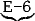
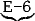
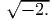
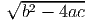
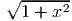
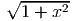
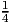
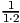
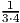

| 0 |  |
||
| sign | exponent | mantissa
| |
| + |  | ||
| sign | mantissa | exponent | |
Figure 3.1: Typical representation of a real number with 32 bits.
In a computer every real number is represented by a sequence of bits, commonly 32 bits (4 bytes). One bit is for the sign, and the distribution of bits for mantissa and exponent can be platform dependent. Almost universally however a 32-bit number will have 8 bits for the exponent and 23 bits for the mantissa, leaving one bit for the sign (as illustrated in figure 3.1). In the decimal system this corresponds to a maximum/minimum exponent of ±38 and approximately 7 decimal digits (at least 6 and at most 9). For a 64-bit number (8 bytes) there are 11 bits for the exponent (±308) and 52 bits for the mantissa, which gives around 16 decimal digits of precision (at least 15 and at most 17).
| 0 | |
||
| sign | exponent | mantissa
| |
| + |  | ||
| sign | mantissa | exponent | |
Single-precision numbers are typically 4 bytes long. Use of double-precision variables doubles the length of the representation. On some machines there is a way to extend beyond double, possibly up to quadruple precision, but that is the end of how far precision can be extended. Some high-performance computers use 64-bit numbers already at single-precision, which would correspond to double-precision on most other machines. While the terms single and double can be ambiguous, some languages (e.g. Fortran) allow to declare 4-byte and 8-byte floating point variables to remove this ambiguity.
The mathematical constant π up to 36 significant decimal digits (usually
enough for quadruple precision) is
| ← single → | ||
| 3.14159265 | 3589793 | 23846264338327950288 |
←- double -→
| ||
Using double-precision numbers is usually barely slower than single-precision. Some processors always use their highest precision even for single-precision variables, so that the time to convert between number representations makes single-precision calculations actually slower. Double-precision numbers do, however, take twice as much memory.
Several general-purpose math packages offer arbitrary-precision arithmetic. There are also source codes available for multiplication, square roots, and other common operations in arbitrary precision. In either case, arbitrary-precision calculations are disproportionally slow.
Many fractions have infinitely many digits in decimal representation, e.g., 1/6=0.1666666.... The same is true for binary numbers; only that the exactly represented fractions are fewer. The decimal number 0.5 can be represented exactly as 0.100000..., but decimal 0.2 is in binary form 0.00110011001100110... and hence not exactly representable with a finite number of digits. In particular, decimals like 0.1 or 10-3 have an infinitely long binary representation. For example, if a value of 9.5 is assigned it will be 9.5 exactly, but 9.1 carries a representation error. In single-precision 9.1 is 9.100000381.... (One can see this, for example, by using the C commands float x=9.1; printf("%14.12f\n",x);, which print the single precision variable x to 12 digits after the comma. Or alternatively with the Python command print '%.17f' % 9.1 versus print '%.17f' % 9.5). For the same reason, 0.1 + 0.1 + 0.1 - 0.3 is not zero. (The fact that binary cannot represent arbitrary decimal fractions exactly is a particular nuisance for accounting software, where everything needs to match to the cent.) Any if condition for a floating point number hence needs to include a tolerance, e.g. not if (a==0.8), but if (abs(a-0.8)<1e-12).
In terms of algebraic structures, the set of floating point numbers does not obey the same rules as the set of real numbers. For example, (a + b) + c may be different from a + (b + c). The associative property, that the order in which operations are performed does not matter, does not necessarily hold for floating point numbers.
Necessarily, there is always a maximum and minimum representable number; exceeding them means an “overflow” or “underflow.” This applies to floating-point numbers as well as to integers. Currently the most common integer length is 4 bytes. Since a byte is 8 bits, that provides 24×8 = 232 ≈ 4 × 109 different integers. The C language allows long and short integers, but whether they really provide a longer or shorter range depends on the platform.
This is a lot of variability, but at least for floating-point numbers standardization came along.
The computer arithmetic of floating-point numbers is defined by the IEEE 754 standard (originally 754-1985, then revised by the 854-1987 and 754-2008 standard). It standardizes number representation, roundoff behavior, and exception handling, which are all described in this chapter. Conformance to the standard can usually be enforced with compiler options.
| single | double | |
| bytes | 4 | 8 |
| bits for mantissa | 23 | 52 |
| bits for exponent | 8 | 11 |
| significant decimals | 6–9 | 15–17 |
| maximum finite | 3.4E38 | 1.8E308 |
| minimum normal | 1.2E-38 | 2.2E-308 |
| minimum subnormal | 1.4E-45 | 4.9E-324 |
Table 3.1 summarizes the IEEE standardized number representations, partly repeating what is described above. When the smallest (most negative) exponent is reached, the mantissa can be gradually filled with zeros, allowing for even smaller numbers to be represented, albeit at less precision. Underflow is hence gradual. These numbers are referred to as “subnormals” in Table 3.1.
As a curiosity, tan(π∕2) does not overflow with standard IEEE 754 single-precision numbers. Simply assign π with enough digits, given above, to a variable, divide by two, and take the tangent; the result will be finite, in single as well as in double precision. In fact the tangent does not overflow for any argument.
A few bit patterns have special meaning and serve as “exceptions”. There is a bit pattern for numbers exceeding the maximum representable number, a bit pattern for Inf (infinity), -Inf, and NaN (not a number). For example, 1.∕0. will produce Inf. An overflow is also an Inf. There is a positive and a negative zero. If a zero is produced as an underflow of a tiny negative number it will be -0., and 1.∕(-0.) produces -Inf. A NaN is produced by expressions like 0.∕0., , or Inf-Inf. This is part of the IEEE 754 standard. Exceptions are intended to propagate through the calculation, without need for any exceptional control, and can turn into well-defined results in subsequent operations, as in 1./Inf or in if (2.<Inf). If a program aborts due to exceptions in floating-point arithmetic, which can be a nuisance, it does not comply with the standard. IEEE 754 floating-point arithmetic is algebraically complete; every algebraic operation produces a well-defined result.
Roundoff under the IEEE 754 standard is as good as it can be for a given precision (at least for the elementary operations). The error never exceeds half the gap of the two machine-representable numbers closest to the exact result! Halfway cases are rounded to the nearest even (0 at end) binary number, rather than always up or always down, to avoid statistical bias in rounding.
Modern platforms can conform to IEEE 754, although possibly with a penalty on speed. Compilers for most languages provide the option to enable or disable the roundoff and exception behavior of this IEEE standard. Certainly for C and Fortran, ideal rounding and rigorous handling of exceptions can be enforced on most machines. The IEEE standard can have a disadvantage when enabled; it can slow down the program slightly or substantially. Many general-purpose math packages also comply with the IEEE 754 standard.
Using exactly representable numbers allows us to do calculations that incur no roundoff at all, at least when IEEE 754 is enabled. Of course every integer, even when defined as a floating-point number, is exactly representable. For example, addition of 1 or multiplication by 2 do not have to incur any roundoff at all. Factorials can be calculated, without loss of precision, using floating-point numbers. Normalizing a number to avoid an overflow is better done by dividing by a power of 2 than by a power of 10.
The numerical example of a chaotic iteration in chapter 1 was computed with the standard enabled. These numbers, even after one thousand iterations, can be reproduced exactly on a different computer and a different programming language. Of course, given the sensitivity to the initial value, the result is quantitatively incorrect on all computers; after many iterations it is entirely different from a calculation using infinitely many digits.
Using the rules of error propagation, or common sense, we recognize situations that are sensitive to roundoff. If x and y are real numbers of the same sign, the difference x - y will have increased relative error. On the other hand, x + y has a relative error at most as large as the relative error of x or y. Hence, adding them is insensitive to roundoff. Multiplication and divisions are also not roundoff sensitive; we only need to worry about overflows or underflows, in particular division by zero. Among the four elementary operations only subtraction of numbers of equal sign or addition of numbers of opposite sign increase the relative error.
An instructive example is solving a quadratic equation ax2 + bx + c = 0 numerically. In the familiar solution formula x = (-b ±)∕(2a), a cancellation effect will occur for one of the two solutions if ac is small compared to b2. The remedy is to compute the smaller root from the larger. For a quadratic polynomial the product of its two roots equals x1x2 = c∕a. If b is positive then one solution is obtained by the equation above, x1 = -q∕(2a), with q = b + , but the other solution is obtained as x2 = c∕(ax1) = -2c∕q. This implementation of the solution of quadratic equations requires no extra line of code; the common term q could be calculated only once and stored in a temporary variable, and the sign of b can be accommodated by using the sign function sgn(b), q = b + sgn(b). (To perfect it, a factor of -1∕2 can be absorbed into q.)
Despite of what textbooks might advise, we usually do not need to bother writing an additional line to check whether a is zero. The probability of an accidental overflow, when dividing by a, is small and, if it does occur, a modern computer will either complain or it is properly taken care of by the IEEE standard, which would produce an Inf and continue with the calculation in a consistent way.
Sometimes an expression can be recast to avoid cancellations that lead to increased sensitivity to roundoff. For example,  - 1 leads to cancellations when x is close to zero, but the equivalent expression x2∕( + 1) has no such problem. A basic example of an alternating series whose cancellation error can be avoided is 1 - + - + -... =  +  + .... There is no need to evaluate this infinite series numerically, but it illustrates the concept.
An example of unavoidable cancellations are finite-difference formulas, like f(x + h) - f(x), where the value of a function at point x is subtracted from the value of a function at a nearby point x + h. An illustration of the combined effect of discretization and roundoff errors will be given in figure 7.1.
An advanced technique called “interval arithmetic” takes advantage of directed roundings. Every result is represented not by one value of unknown accuracy, but by two that straddle the exact result. An upper and a lower bound are determined at every step of the calculation. Although the interval may vastly overestimate the actual uncertainty, it provides mathematically rigorous bounds. Interval arithmetic can sometimes turn a numerical calculation into a mathematical proof.
Brainteaser: Using a programming language of your choice, find out whether 1.2-1-0.2==0 is true or false.
Recommended Reading: The “father” of the IEEE 754 standard, William Kahan, posts roundoff-related notes online at http://www.cs.berkeley.edu/~wkahan/, including a description of the standard http://www.cs.berkeley.edu/~wkahan/ieee754status/IEEE754.PDF. A technical summary is provided by David Goldberg What every computer scientist should know about floating point arithmetic. The document is readily found online, for example at http://docs.oracle.com/cd/E19957-01/800-7895/800-7895.pdf.